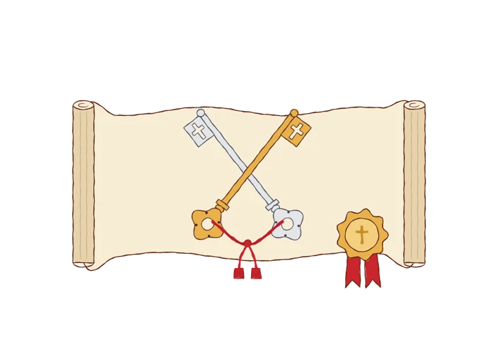

The map could not load. The list of popes, profiles and tour still work.

Keep exploring
Art: Print & Praise
Map outlines from Natural Earth. Eras are groupings used by this project, not official Vatican classifications.
This map needs JavaScript. The official list of popes is on vatican.va.